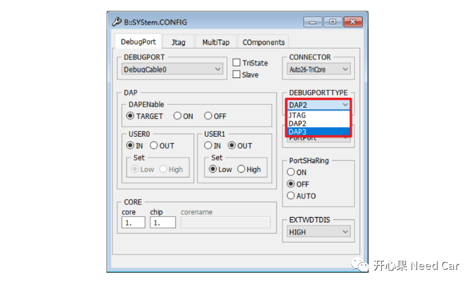
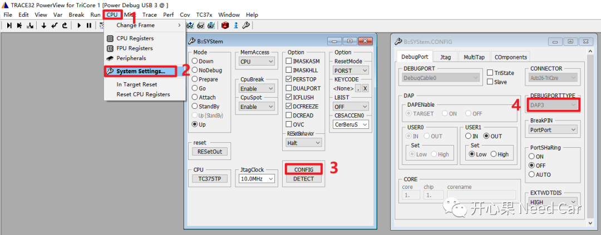
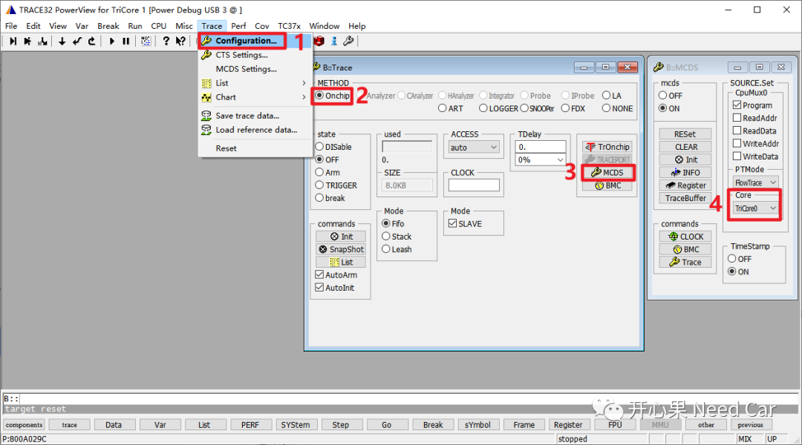
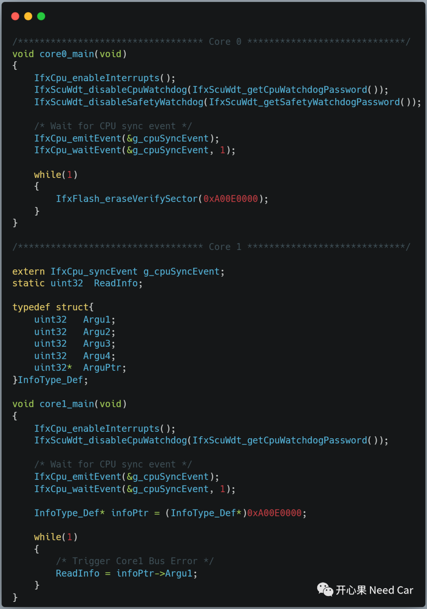
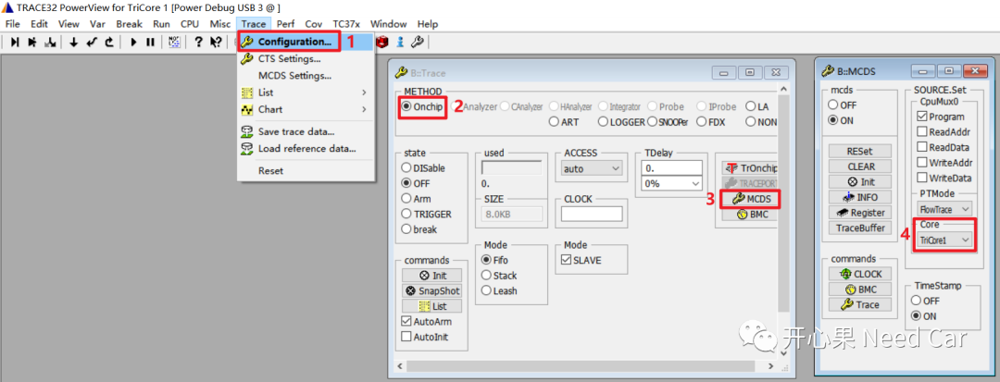
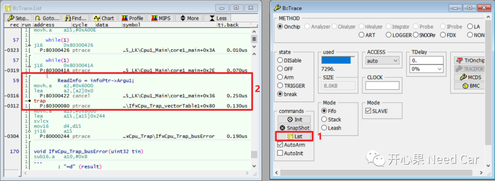

开心果 Need Car · 2023-10-27T07:37:00+08:00 · 微信原文
面对工程Bug，尤其输入信息不足的情况下，我们往往一脸懵，不知如何破局，很多时候，排查问题的工程师只能抓耳挠腮。如果想找到问题根因，最好的方式莫过于：利用有限的信息，尽可能的模拟问题工况，复现问题。复现问题，排查问题，不仅需要工程师对问题具有一定的理解深度、敏感度，同时，也在挑战着工程师面对问题时的调试手段，即：工程师能否根据问题类型选择恰当的调试工具（或者调试方法），以便于追溯到问题根因。本文，针对调试工具，聊一种奢侈玩法：利用Lauterbach的Onchip功能，记录CPU的执行痕迹，追溯Trap发生点。
1、Lauterbach Onchip调试配置
在使能Onchip功能之前，需要先确认选择的Debug Port Type正确，Debug Port Type包括：DAP2（Device Access Port）、DAP3、JTAG，如下所示：

在某些场景中，选择DAP2方式可能显示不支持Onchip功能，可以改变一下调试端口类型，比如：DAP3模式（需要确认目标板是否支持）。如果调试口支持JTAG模式，一般都会支持Onchip功能。Debug Port Type选择如下所示：


如果公司有财力，购买了Analyzer等外置模块，在存储资源和监控Core数量上会更丰富，当然，对所监控的芯片类型也可能有所要求，eg：是否支持ED（Emulation Devices）芯片等（我暂时还没有试过，大家可以试试）。
2、CPU的运行记录



如上可以看出：通过List可以精准的查找到Core1发生Bus Error Trap的位置。所以，面对程序进入Trap之类的问题，使用此方式可以有效知道Core #n从哪个位置进入Trap。当程序停止以后，通过最新的8KB数据即可知道出问题时，目标Core具体执行了哪些指令（函数）。
往期精彩回顾
CAN FD通信：数据段错误，错误帧的速率是500Kbps还是2Mbps？